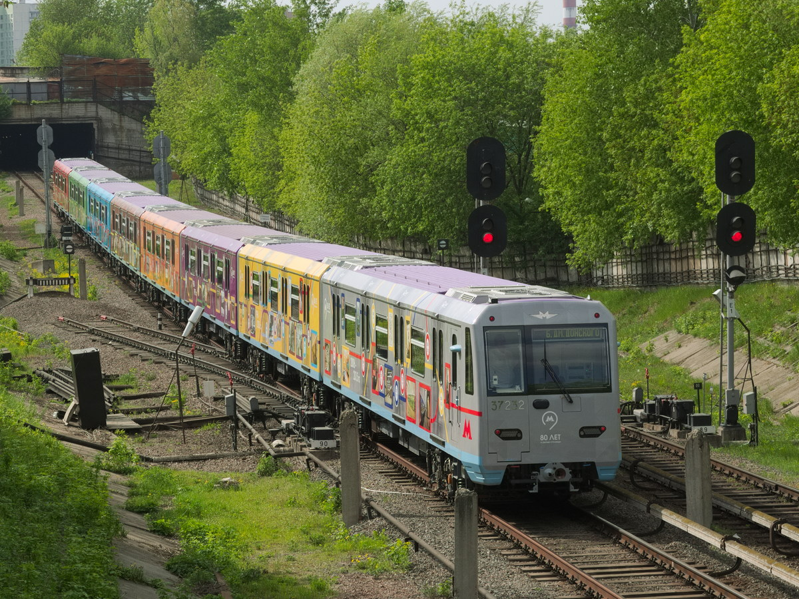
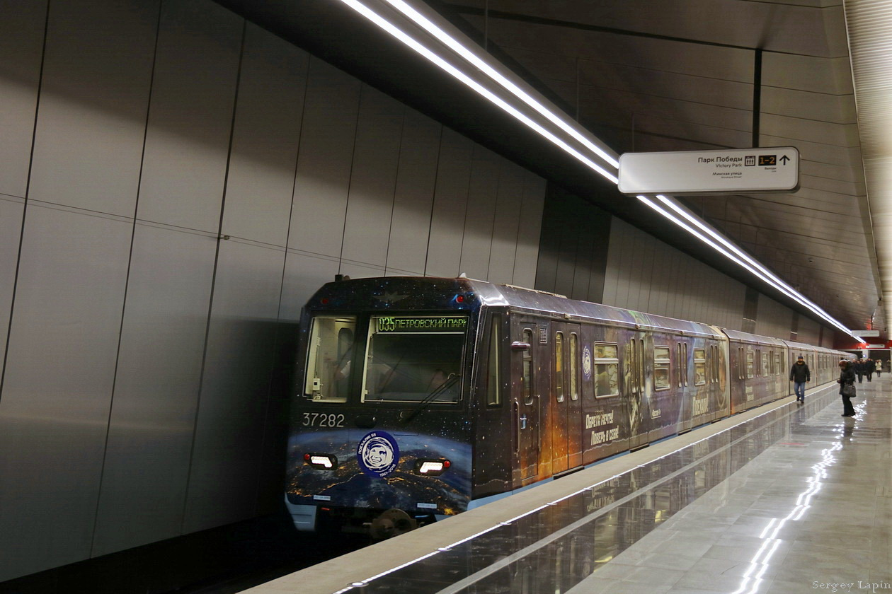
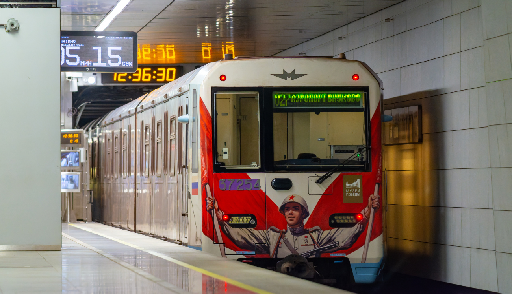
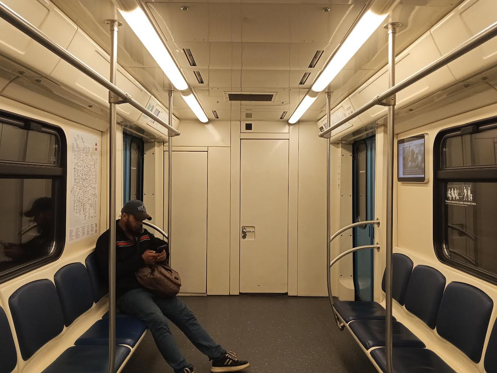

81-760А/761А/763А «Ока»
81-760А/761А/763А «Ока» — модификация электровагонов метрополитена серии 81-760/761 «Ока», изначально изготовленная на ОАО «Метровагонмаш» в г. Мытищи Московской области по заказу ЗАО «Бакинский метрополитен», однако впоследствии переданная в эксплуатацию ГУП «Московский метрополитен».
Это первый электропоезд в Московском метрополитене и России со сквозным проходом через весь состав, а также первый в Московском метрополитене с промежуточными безмоторными вагонами для уменьшения общего веса поезда и его воздействия на железнодорожное полотно.
Общая информация
| Параметр | Значение |
|---|---|
| Город | Москва 🇷🇺 |
| Депо/Парк | ТЧ-18 «Солнцево» |
| Модель | 81-760А / 761А / 763А «Ока» |
| Главный конструктор | Аркадий Зайцев |
| Годы постройки | 2014–2015 |
| Текущее состояние | Эксплуатируется |
| Назначение | Пассажирский |
Составность (стандартная)
Мг+Мп+Пп+2Мп+Пп+Мп+Мг
8 вагонов (на парадах сокращается до 7)
🔗 Наследие: В дальнейшем на основе вагонов 81-760А/761А/763А «Ока» были изготовлены вагоны 81-765/766/767 «Москва» и 81-775/776/777 «Москва-2020».
Конструкция и особенности
🔗 Сквозной проход
Между вагонами установлены герметичные межвагонные переходы типа «гармошка» производства компании Hübner. Они обеспечивают сквозной проход пассажиров по всему составу, увеличивают вместимость и способствуют равномерному распределению воздуха, устраняя «мёртвые» климатические зоны.
🚆 Безмоторные вагоны
В состав входят промежуточные безмоторные вагоны (Пп) модели 81-763А. Это решение снизило общий вес поезда и уменьшило его воздействие на железнодорожное полотно.
🚪 Двери и кузов
Кузова цельнометаллические, сварные из нержавеющей стали. Двери двустворчатые прислонно-сдвижные (производство IFE) с системой противозажатия. Ширина дверного проёма — 1250 мм.
❄️ Климат и салон
Салоны оборудованы системой кондиционирования с обеззараживанием воздуха. В отделке использованы стеклопластиковые панели. Сиденья — вандалоустойчивые диваны Fainsa с индивидуальными подспинниками.
История
Поступление в депо «Владыкино»
Первый поезд модификации А поступил в электродепо «Владыкино» Московского метрополитена, где начал проходить обкатку.
Первая поездка с пассажирами
На Серпуховско-Тимирязевской линии состоялась первая поездка с пассажирами состава из восьми вагонов модели 81-760А/761А/763А «Ока». Поезд остался в Москве из-за смены техзадания Бакинским метрополитеном.
Именные поезда
Решено сделать два поезда именными: один — в честь 70-летия победы в Великой Отечественной войне, другой — в честь 80-летия Московского метрополитена. 22 апреля 2015 года начал движение поезд «70 лет Великой Победы», 13 мая — «80 лет в ритме столицы».
Передача в депо «Выхино»
Оба состава переданы в депо «Выхино». С 3 февраля 2016 года началась эксплуатация с пассажирами на Таганско-Краснопресненской линии. Позже к ним присоединился третий поезд — «Космический».
Переводы между линиями
Завершена эксплуатация всех трёх поездов на ТКЛ. «Поезд Победы» вернулся на СТЛ. «80 лет в ритме столицы» и «Космический поезд» работали на КРЛ, затем вернулись на СТЛ.
Передача в депо «Солнцево»
Поезда переданы в депо «Солнцево». С 27 ноября «Космический поезд» эксплуатировался на Солнцевской и Большой кольцевой линиях, с 5 декабря там же — «80 лет в ритме столицы». В начале 2019 года туда же передан «Поезд Победы».
Тематические оформления
На базе этой модели было реализовано три тематических оформления. После 2019 года все они были сняты, и поезда вернулись к стандартной бело-фиолетовой окраске («Баклажан»).
🏅 «Поезд Победы»
Вагоны 37253 — 37254
Изначально — «70 лет Великой Победы» (2015). В 2016 переименован в «Поезд Победы».
🚀 «Космический поезд»
Вагоны 37281 — 37282
Оформление к 55-летию первого полёта человека в космос (2016–2019).
🏙️ «80 лет в ритме столицы»
Вагоны 37231 — 37232
Оформление к 80-летию Московского метрополитена (2015–2019).
Фотогалерея

📌 Станция «Рассказовка».
81-760А на станции «Рассказовка»

📌 Электродепо «Владыкино» (ТЧ-14)
«80 лет в ритме столицы»

📌 Станция «Минская»
«Космический поезд»

📌 Станция «Солнцево»
«Поезд Победы»

📌 Салон вагона №37281
Салон, вид вперед.
📸 Фото взяты с transphoto
Нажмите на фото для увеличения
«Баклажан» — уникальный пример того, как поезда, созданные для другого города, становятся частью Московского метро. Пурпурно-голубые составы с прозвищем, данным за цвет, и сквозным проходом — настоящая находка для пассажиров Солнцевской линии».